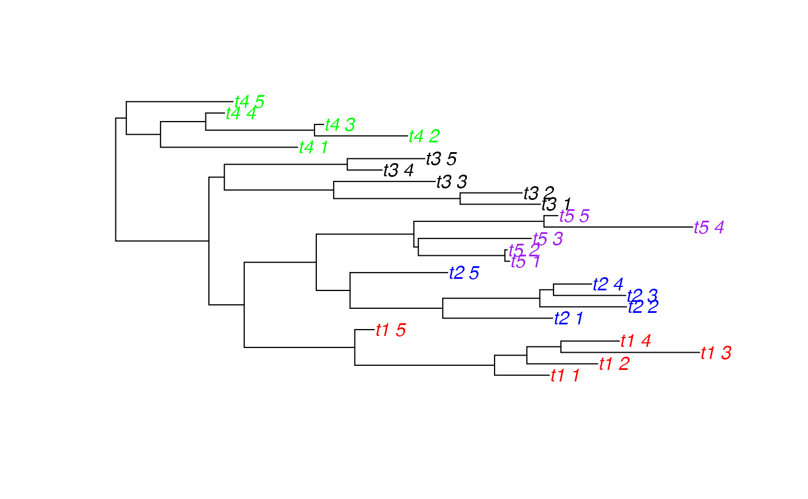
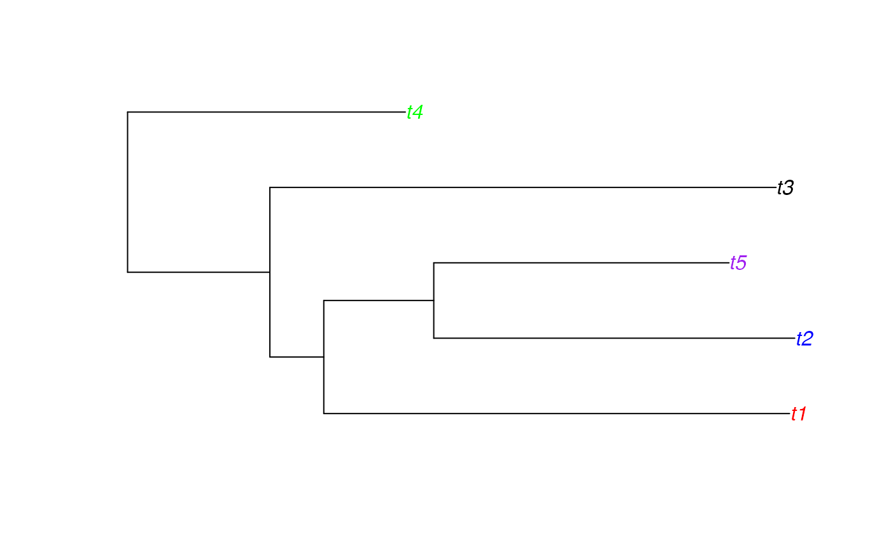
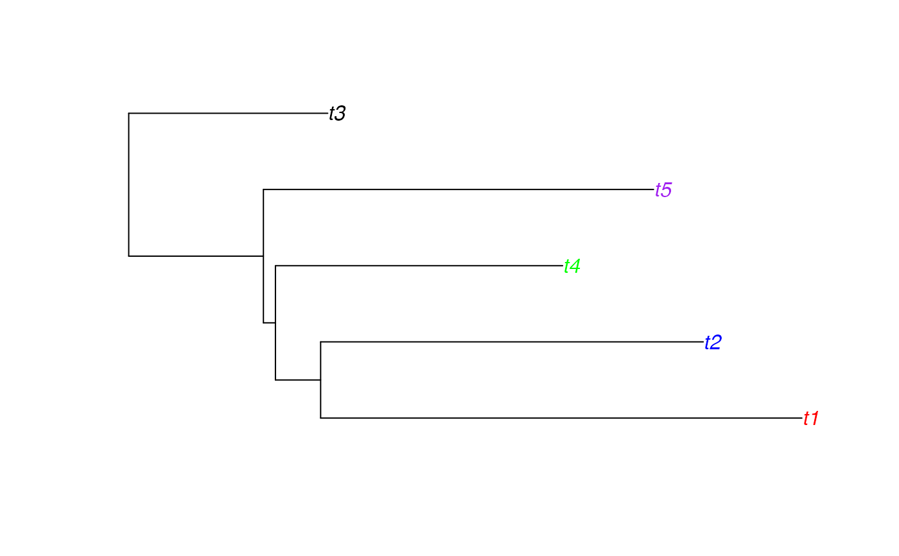

Reduce a tree with many tips into a tree with a single tip per category. Where a category's tips form a monophyletic clade, the clade is replaced by a single tip labelled by that category. Where a category's tips are paraphyletic, the largest clade for that category is treated as above, and all other tips pruned.
makeCollapsedTree(tree, df, warnings = TRUE)
| tree | an object of the class |
|---|---|
| df | a two-column data frame linking tip labels (column 2) with their corresponding categories (column 1). |
| warnings | a logical determining whether a warning should be given if there are paraphyletic categories (default TRUE) |
A tree (class phylo) whose tip labels are exactly the set of unique categories from df.
# simulate a tree which is monophyletic per category tree <- simulateIndTree(rtree(5), permuteTips=FALSE) df <- cbind(sort(rep(rtree(5)$tip.label,5)),sort(tree$tip.label)) palette <- c("red","blue","black","green","purple")#' tipCols <- palette[as.factor(sapply(tree$tip.label, function(l) df[which(df[,2]==l),1]))] plot(tree, tip.color=tipCols)collapsedTree <- makeCollapsedTree(tree,df) plot(collapsedTree, tip.color=palette[as.factor(collapsedTree$tip.label)])# simulate a tree which is paraphyletic per category tree <- simulateIndTree(rtree(5), tipPercent=20) tipCols <- palette[as.factor(sapply(tree$tip.label, function(l) df[which(df[,2]==l),1]))] plot(tree, tip.color=tipCols)collapsedTree <- makeCollapsedTree(tree,df)#> [1] "Note: the tree was not monophyletic per category"